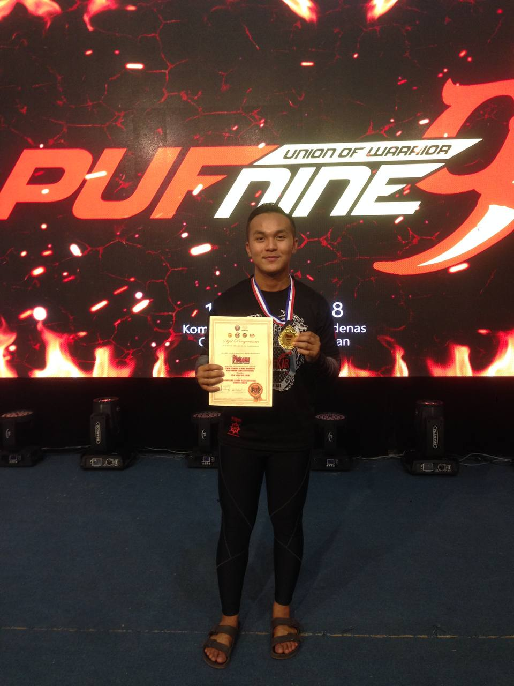

This website is for IMD311 Individual assingment
ABOUT MYSELF
Thank You for Visiting My WEBSITE
ABOUT ME
May 13, 2021

Hello! Firstly, I would like to tell that this is my first experience to create my own website, so before you guys keep exploring my website, I hope you guys can enjoy my work and also can gain something from my website. My name is Muhammad Izzul Islam Bin Mohamad Ithnian and I’m 21 years old. Now I’m studying at Universiti Teknologi Mara (UiTM) Kedah Branch and I’m student from Diploma Information Management and this year is my last semester at (UiTM) Kedah Branch. I’m live in Lumut, Perak, what can I said this is my first time stay at Kedah. From my hometown to Kedah it takes 3 hours and I’m happy to stay and study at here. Other than that, I have lot of things and goals that I want to achieve in my life and also want to get married. I can describe my life that I’m workaholic and simple person where most of day filled with my friends and getting busy with my own and family business. Before I further my study I have been working as a marketing person at my dad’s company which is the transportation company. I’m glad to be one of the student from (UiTM) Kedah Branch because of this my new journey of my life which is to get a Diploma in course of Information Management. Last but not least, I get lot of knowledge during my study, for example I can learn how to create a website and how to use adobe software in a right ways. It’s such a good experience and at the same time I also can gain more knowledge during my study at here.
MY SPORT
April 13, 2018

Mixed Martial Arts MMA
After end of my SPM 2017,I started to focus on my training for Muaythai with my coach and group members. Mixed Martial Art (MMA) is one of my favourite sports, because of it teach me how to build up our self- confidence when we want to fight with our opponent. I keep on training because of on April 13, 2018, I have my big match at “Kompleks Sukan Kriss Modenas Gurun, Kedah”. I’m proud of myself because of I win the fight within 5 minutes to beat my opponent from Kedah. Other than that, I also love to play football and futsal during my leisure time. In secondary schools, I’m always representing my school in football and futsal competition. I’m one of the person that been selected to be a captain for my football teams. So that, what I can conclude this two sport which is football and mixed martial art is the best sports ever in my life. In UiTM, I have been representing for UiTM Kedah in futsal competition among others faculty. My most precious moment for me when I can help my team win the competition and achieve gold medal in the competition among the faculty. There are the best moment and experience for me and what can I describe which is sports is one of the my passion.